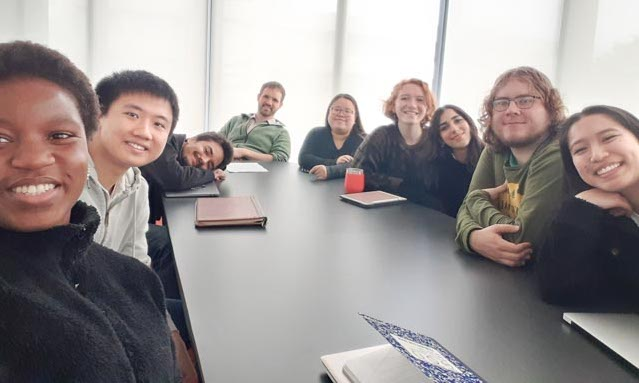

People
People
Projects
Teaching
Join the Lab
On this page
Principal Investigator
Current Undergraduate Students
Alumni
Graduate Students
Undergraduate Students
High School Students
People
Current and past members of the Zimmerman Lab at USF.

Pre-COVID Lab Group Meeting
Principal Investigator
Naupaka Zimmerman
Biogeography, ecological function, and evolution of plant microbiomes.
No matching items
Current Undergraduate Students
Ava Albert
Bioinformatic analyses of plant metagenomes to extract symbiont reads.
No matching items
Alumni
Graduate Students
Ashley Sango
Public health and urban aerial microbiomes across the City of San Francisco.
Derek Newberger
Foliar and soil fungi associated with different cover crop species in an organic farming system.
Jason Krastins
Endophyte modulation of drought stress in
Populus
; Primer bias in high-throughput sequencing in an experimental rainforest (Biosphere2).
Joshua Copeland
Community ecology and VOC production by endophytes of
Populus
spp.
Sarah Gao
Biogeochemistry and microbial ecology of interacting drought and cover crop amendment in an organic farming system.
No matching items
Undergraduate Students
Christina Tran
Phyllosphere microbiomes of cover crops at Star Route Farms.
Emma Gibson
Biogeography of fungal endophytes in
Metrosideros excelsa
across San Francisco.
Emre Ovet
Experimental inoculation of
Arabidopsis thaliana
with endophytes and their effects on VOC signaling.
Julian Murdzek
Fungal endophytes of
Metrosideros excelsa
across San Francisco.
Marcello Kuan
Phyllosphere bacterial communities from cover crops at Star Route Farms.
Natalie Ashburner-Wright
Modulation of foliar transpiration by endophytes of
Populus trichocarpa
.
Nivedita Ghosh
Nutrient analyses from a soil microcosm drought experiment.
Reina Rios
Experimental inoculation of
Arabidopsis thaliana
with endophytes and their effects on VOC signaling.
Sayeh Jafari
Experimental inoculation of
Populus trichocarpa
with endophytes to quantify effects on drought stress.
Victoria Lamar
Public health impacts of air quality and urban aerial microbiomes in San Francisco.
No matching items
High School Students
Amirtha Maria
Phyllosphere bacteria of cover crops in an organic system; effects of aquatic nutrient levels on chlorophyll concentration across NEON sites.
No matching items
Projects